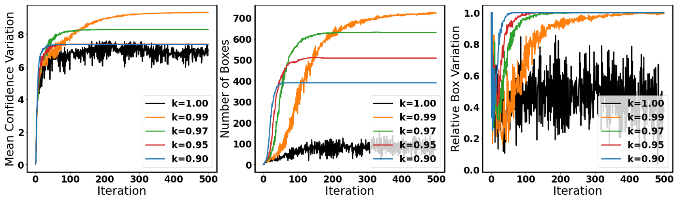

M. O. Ojo, S. Giordano, G. Procissi and I. N. Seitanidis, "A Review of Low-End, Middle-End, and High-End Iot Devices," in IEEE Access, vol. 6, pp. 70528-70554, 2018, doi: 10.1109/ACCESS.2018.2879615.
Deep Learning Models are vulnerable to Adversarial Attacks.
High-End: Linux
High-End: RT-Smart
Middle-End: RT-Thread
IoT Devices consist of Hight-End, Middle-End, and Low-End Devices.
Adversarial Detection
Attacking Object Detection in Real Time.
Man-in-the-Middle Attack
A hardware attack against Object Detection.
Step 1: Generating the perturbation
Prior Research
Our Method
No learning rate decay
With learning rate decay
Our method generates more bounding boxes, and have less variation.

Step 2: Applying the perturbation
From Linux to RT-Smart
From Monolithic to Microkernel RTOS
From RT-Smart to RT-Thread
From High-End Devices to Middle-End Devices.
Adversarial Classification
Distributed Black-Box Attack against Image Classification.
Demo: DeepAPI via RT-Thread
Access Image Classification Cloud Service on MCU.
Deep Learning Models are vulnerable to Adversarial Attacks.
High-End: Linux
High-End: RT-Smart
Middle-End: RT-Thread
IoT Devices consist of Hight-End, Middle-End, and Low-End Devices.

 Autonomous Driving: The IoT in Automotive
Autonomous Driving: The IoT in Automotive